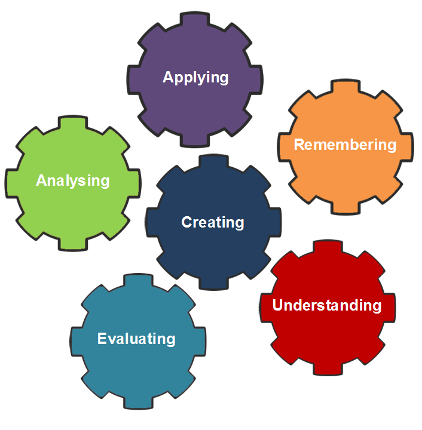

Hi, my name is Wendell and I have some advice for you!
Finding meaning in learning is the key.
-
Make real life connections with the new information and see how it fits in with what else you
know.
-
The key is to interact with the information. Using multiple sources will help you with this.
Along with books, gather relevant videos, podcasts, movies, and blogs as well.
Spend More Time Practicing Things You Find Difficult

- Practice in itself is great, but in order to excel at any skill, you need to push yourself
out of your comfort zone and practice things you aren't good at. This is known as deliberate
practice.
- Concentration is important while practicing. If your mind is wandering, not much learning
will
happen.